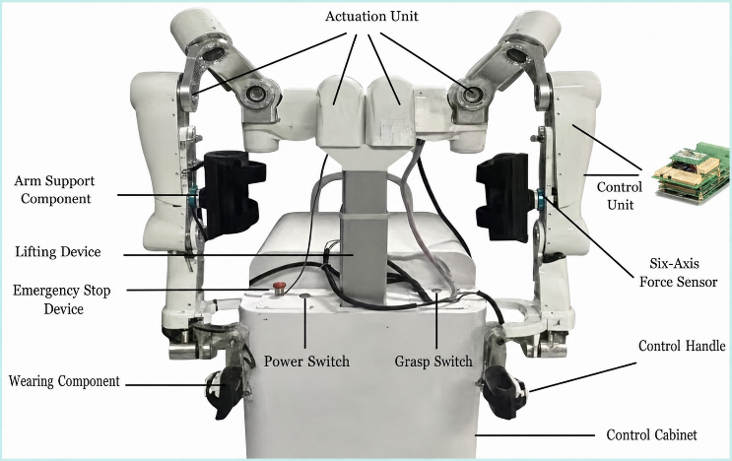

SYSTEMS PROJECT / 01
20-motor upper-limb control migration.
Ubuntu · ROS 2 · EtherCAT · Hardware integration
I migrated a 20-motor Windows-oriented control workflow toward Ubuntu and ROS 2, adapting EtherCAT master/slave communication and integrating a control card without native Linux support.
The value of the project was architectural: understanding what must remain deterministic when vendor interfaces, operating systems, bus configuration, and application software change together. It strengthened the fieldbus experience later used in quadruped deployment.